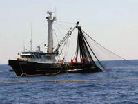

Uzgoj tuna
Jadran tuna se bavi ulovom, uzgojem i izvozom najcjenjenije vrste tuna, sjevernoatlantske plavoperajne tune (lat. thunnus thynnus, eng. Atlantic bluefin tuna). Zanimljivo je da se ta vrsta tune nalazi na reversu kovanice od 2 kn. Jedino se hrvatski uzgajivači bave pravim uzgojem tune, dok se u svim ostalim zemljama bave samo tovom već odraslih jedinki. Ova vrsta tune se ističe činjenicom da je jedna od rijetkih toplokrvnih riba, što joj omogućuje izuzetan učinak mišića i postizanje velikih brzina do 80 km/h. Osim izuzetne snage mišića još jedna posebnost ove vrste čini je iznimnom plivačicom, za razliku od većine drugih riba tijelo tune stoji kruto tako da zamasi repa imaju puno veći učinak pri plivanju. Zbog svog stalnog kretanja troši velike količine kisika, tako da zalazi samo u ekološki čista mora.
tune se ističe činjenicom da je jedna od rijetkih toplokrvnih riba, što joj omogućuje izuzetan učinak mišića i postizanje velikih brzina do 80 km/h. Osim izuzetne snage mišića još jedna posebnost ove vrste čini je iznimnom plivačicom, za razliku od većine drugih riba tijelo tune stoji kruto tako da zamasi repa imaju puno veći učinak pri plivanju. Zbog svog stalnog kretanja troši velike količine kisika, tako da zalazi samo u ekološki čista mora.
Tipični primjerci u divljini narastu da dužine 2–2.5 m (oko 350 kg). Mogu dostići i do 30 godina starosti. Najveća ikad ulovljena plavoperajna tuna ulovljena je 1979. godine u kanadskim vodama i bila je duga 458 cm, a težila je 688 kg.
Tuna se najčešće kreće u velikim jatima koja su sklona udaljenim migracijama. Budući da je Jadran bogat sitnom plavom ribom kao što su srdela i inćun, tuna dolazi u Jadransko more zbog hranjenja. Mrijesti se u dubljim područjima Sredozemnog mora i Atlantskog oceana, a mriještenje tune u Jadranskom moru do sad nije zabilježeno. Kako je odlična plivačica koja je stalno u pokretu zalazi u sva područja Jadranskog mora, čak je viđena u Novigradskom moru i u Prokljanskom jezeru.
Naši tunolovci najčešće love u blizini Jabuke, gdje ima dosta plave ribe kojom se tuna hrani. Kada se locira jato tuna hvata ga se u mrežu tunaru (jedna vrsta mreže plivarice). Ovako je izgledao i tradicionalni tunolov, s tom razlikom da se nakon hvatanja riba ubijala i plasirala na tržište. Mi nakon što uhvatimo jato u mrežu tunaru dovozimo kaveze u koje se riba namami iz mreže, a zatim ih brodovi tegljači vuku u naše uzgajalište.
{kind=link}